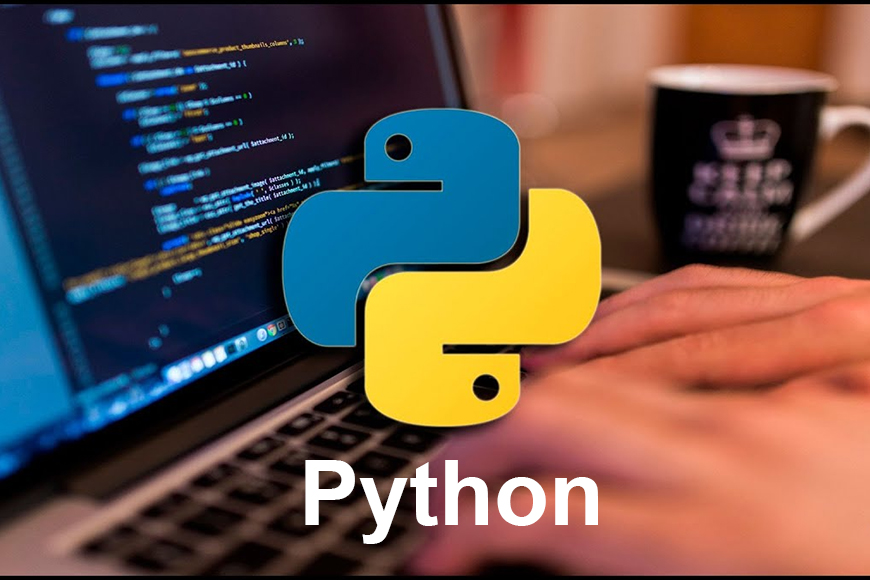
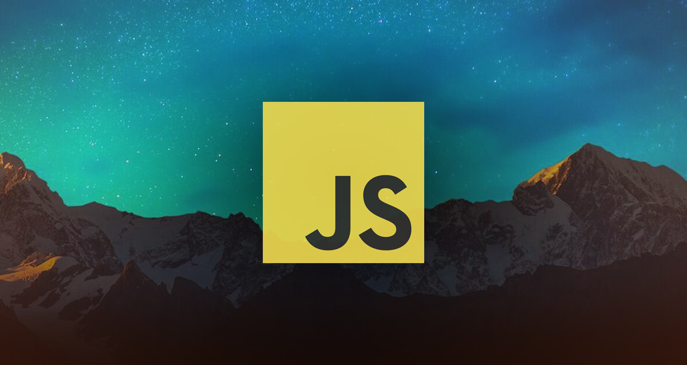

Python
PythonPython es un lenguaje de programación ampliamente utilizado en las aplicaciones web, el desarrollo de software, la ciencia de datos y el machine learning (ML). Los desarrolladores utilizan Python porque es eficiente y fácil de aprender, además de que se puede ejecutar en muchas plataformas diferentes. El software Python se puede descargar gratis, se integra bien a todos los tipos de sistemas y aumenta la velocidad del desarrollo.
Recomendación: Explora las bibliotecas y frameworks populares.
Java
JavaJava es un lenguaje de programación ampliamente utilizado para codificar aplicaciones web. Ha sido una opción popular entre los desarrolladores durante más de dos décadas, con millones de aplicaciones Java en uso en la actualidad. Java es un lenguaje multiplataforma, orientado a objetos y centrado en la red que se puede utilizar como una plataforma en sí mismo. Es un lenguaje de programación rápido, seguro y confiable para codificarlo todo, desde aplicaciones móviles y software empresarial hasta aplicaciones de macrodatos y tecnologías del servidor.
Recomendación: Antes de aventurarte en bibliotecas o frameworks específicos, asegúrate de tener un sólido dominio de los fundamentos de Java.

JavaScript
JavaScriptJavaScript es un lenguaje de programación que los desarrolladores utilizan para hacer páginas web interactivas. Desde actualizar fuentes de redes sociales a mostrar animaciones y mapas interactivos, las funciones de JavaScript pueden mejorar la experiencia del usuario de un sitio web. Como lenguaje de scripting del lado del servidor, se trata de una de las principales tecnologías de la World Wide Web. Por ejemplo, al navegar por Internet, en cualquier momento en el que vea un carrusel de imágenes, un menú desplegable “click-to-show” (clic para mostrar), o cambien de manera dinámica los elementos de color en una página web, estará viendo los efectos de JavaScript.
Recomendación: Comienza por entender bien los fundamentos de JavaScript, como variables, tipos de datos, estructuras de control (condicionales y bucles), funciones y objetos.
C#
C#C# es un lenguaje de programación muy versátil, creado por Microsoft, con características s imilares al Lenguaje C, pero orientado a objetos. Es muy usado en la industria de los juegos, robótica, impresión 3D, internet de las cosas y desarrollo de aplicaciones web y móviles. Así como también, en el desarrollo de aplicaciones nativas para Microsoft, iOS y Android, como controladores y aplicaciones de escritorio.
Recomendación: Comienza por dominar los conceptos fundamentales de C#, como variables, tipos de datos, estructuras de control (if, for, while), funciones, clases y objetos.